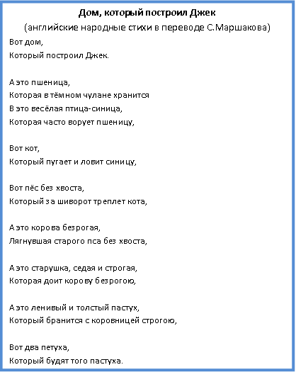
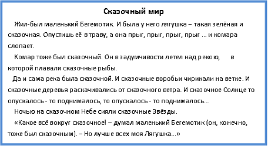
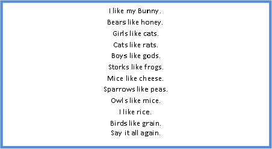
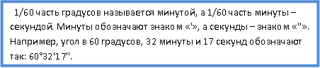

Работа 6. Создаём компьютерные документы
Задание 1. Копирование и вставка фрагментов
1. Откройте текстовый процессор.
2. Откройте файл с текстом Дом.dok(Дом.odt) из папки Заготовки.

3. Используя только операции копирования и вставки, восстановите полный текст известного стихотворения.
4. Сохраните файл в личной папке под именем Дом1 и закройте программу.
Задание 2. Поиск и замена фрагментов
1. Откройте текстовый процессор.
2. Откройте файл с текстом Мир.dok(Мир.odt) из папки Заготовки. Прочитайте текст.

3. Придумайте свой "мир", заменив определение "сказочный" на другое. Постарайтесь сделать это за наименьшее число операций (можно и за одну!).
4. Придумайте и запишите 2-3 предложения, продолжающие вас рассказ.
5. Сохраните файл в личной папке под именем Мир1 и закройте программу.
Задание 3. Ввод текста на английском языке
1. Откройте текстовый процессор.
2. Переключите клавиатуру в режим ввода латинских букв и наберите текст английской скороговорки:

3. Сохраните файл в личной папке под именем Скороговорка и закройте программу.
Задание 4. Вставка символов, отсутствующих на клавиатуре
1. Откройте текстовый процессор.
2. Наберите следующий математический текст.

Для ввода отсутствующих на клавиатуре обозначений градусов, минут и секунд:
1) перейдите на вкладку Вставка;
2) в группе Cимволы щёлкните на стрелке рядом с надписью Cимвол;
3) щёлкните на надписи Другие символы - откроется диалоговое окно Символ;
4) в раскрывающемся списке Шрифт выберите Simbol;
5) воспользовавшись полосой прокрутки, просмотрите символы и найдите нужный символ;
6) вставьте найденный символ (командная кнопка Вставить).
1) откройте диалоговое окно Выбор символа (команда Вставка - Специальные символы);
2) в раскрывающемся списке Шрифт выберите OpenSymbol;
3) с помощью полосы прокрутки найдите и поочерёдна вставьте нужные символы.
3. Сохраните файл в личной папке под именем Символы и закройте программу.
Задание 5. Работа с несколькими документами
1. Откройте текстовый процессор.
2. Последовательно откройте файлы Воды1.doc (Воды1.odt), Воды2.doc (Воды2.odt), Воды3.doc (Воды3.odt) из папки Заготовки.
3. Создайте новый файл и, используя перенос фрагментов текста и переход между окнами (например, с помощью панели задач), соберите текст в новом файле. В качестве образца используйте пример 3 на станице 61 учебника.
4. Сохраните файл в личной папке под именем Воды и завершите работу с программой.
Теперь вы умеете
ускорять свою работу за счёт операций копирования, вставки, поиска и замены фрагментов;
вводить тесты на английском языке;
вводить символы, отсутствующие на клавиатуре;
работать с несколькими документами одновременно.
|